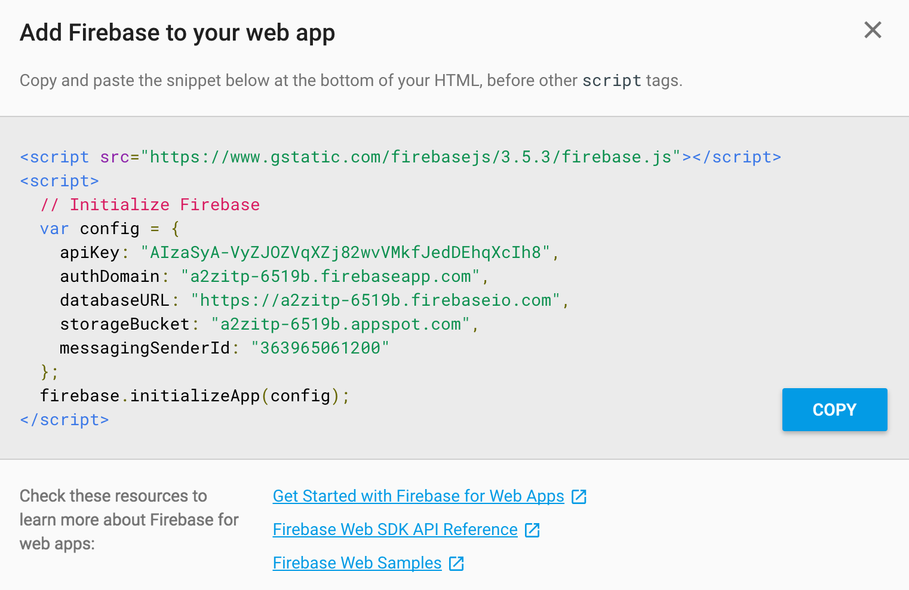
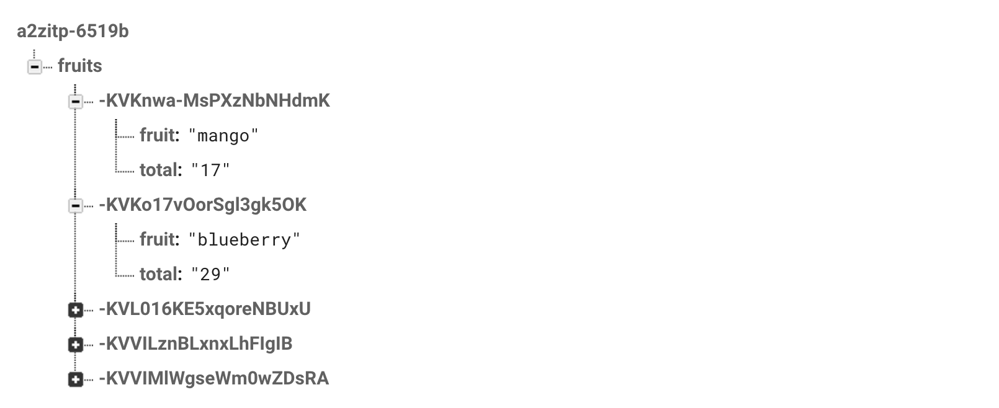

about
syllabus
All example source code
In Building an API with node, I discussed strategies for storing data associated with a web application from a local JSOn file to creating a custom database on your own server. Another strategy is to use a “database as service” to store your data. On this page, I’ll explore the service Firebase which allows you to send and retrieve data from your client-side or server-side JavaScript code. Firebase is a commercial service (from Google), but it has a pretty decent free plan.
There are a few things to note when working with Firebase. Here are some steps to get you started.
There you will see all the code you need to initialize Firebase to your JavaScript code.

Before you can start adding code, for my examples you’ll also need to make the data public. This is certainly a security issue and I would not recommend this for any projects that require private data. Navigate to the “RULES” tab in the firebase console and add the following:
{
"rules": {
".read": true,
".write": true
}
}Now you can go ahead and start adding code to work with Firebase. If you are working with a separate JS file for your code (like in my examples), make sure you add a reference to the firebase library in index.html.
<script src="https://www.gstatic.com/firebasejs/3.5.2/firebase.js"></script>The copy paste the initialize code and add to setup() (or whatever event you are using for when the page is loaded):
function setup() {
var config = {
apiKey: "your_key",
authDomain: "your-project.firebaseapp.com",
databaseURL: "https://your-project.firebaseio.com",
storageBucket: "your-project.appspot.com",
messagingSenderId: "your_sender_id"
};
firebase.initializeApp(config);
}You then need to create a “database” instance from the firebase object.
var database = firebase.database();Everything you send to Firebase is ultimately saved as a JavaScript object and everything is saved in the database as a “path” to that object. Paths are specified using the ref() function. So let’s say you want to store an inventory of fruit. You might create a path to “fruits”:
var fruits = database.ref('fruits');And then you can create an object with the data you want to save:
var data = {
name: 'pear',
count: 7
}There are a variety of ways you can add data to Firebase, but in this case the easiest way is the push() function. In other words, you want to push (aka “add”) a new fruit entry to the database.
fruits.push(data);This could be written as one line of code:
database.ref('fruits').push(data);You can also get a callback.
fruits.push(data, finished);
function finished(error) {
if (error) {
console.log('ooops');
} else {
console.log('data saved!');
}
}You can then navigate to the firebase console to view the data.

The flip side of this is asking Firebase for data. An easy thing to do is assign a callback that returns all of the data for a specific reference (i.e. path).
var ref = database.ref("fruits");
ref.on("value", gotData, errData);The “value” event is triggered when changes are made to the database. You can then read all the data in a gotData() callback (and see errors in a separate callback.) The val() function returns an object with everything that lives as part of the “fruits” reference.
function gotData(data) {
var fruits = data.val();
// Grab the keys to iterate over the object
var keys = Object.keys(fruits);
for (var i = 0; i < keys.length; i++) {
var key = keys[i];
// Look at each fruit object!
var fruit = fruits[key];
}
}If you know the id of a specific fruit you could set a callback for just that one:
var id = '-KVKnwa-MsPXzNbNHdmK';
var ref = database.ref("fruits/" + id);
ref.on("value", gotOne, errData);
function gotOne(data) {
var fruit = data.val();
}